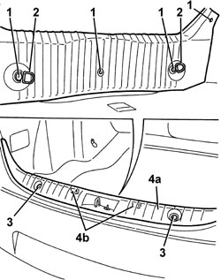
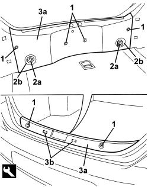

7040B22 LUGGAGE COMPARTMENT/LOAD PLATFORM MOULDING - R+R
- Path
- Procedures > 70 FITTINGS > 7040 BODY INTERIOR FITTINGS AND TRIM > 7040B LUGGAGE COMPARTMENT AND LOAD PLATFORM TRIMS > 7040B22 LUGGAGE COMPARTMENT/LOAD PLATFORM MOULDING - R+R
- Kind
- repair procedure (removal / refitting; the operation number is the code)
- Applies to
- all engines; all production periods
- Interactive page
- https://sloeber94.github.io/elrnDB/alfa/159/en/#/939011251
Applies to: all engines; all production periods
 Removing
Removing
 Refitting
RefittingOp. 7025B66 BOOT COMPARTMENT SEAL - R+R
1. Working from inside the luggage compartment, undo the moulding fixing bolts.
2. Keep the attachment rings.
3. Loosen the upper bolts.
4. Remove the moulding (4a) releasing the internal retainers (4b).

Applies to: all engines; all production periods
Refitting
Removing- Check that the moulding is not damaged.
- Place the moulding in position and attach the inner retainers.
- Tighten the bolts.
- Position the attachment rings and secure them using the bolts.
Component | Fastening | dia | Value (daNm) | Validity |
|---|---|---|---|---|
LUGGAGE RETAINING RING | Bolt | M8x16 | 1.6 ÷ 2.4 |
Applies to: all engines; all production periods; only with equipment: Station Wagon
Removing
Refitting- Open the tailgate.
1. Loosen the luggage compartment moulding fixing bolts.
2. Undo the bolts (2a) and keep the attachment rings (2b).
3. Remove the moulding (3a) releasing the inner retainers (3b) using the special tool.
Tool | Description | Function | Validity |
|---|---|---|---|
1823015000 | Knife | Retainer removal |

Applies to: all engines; all production periods; only with equipment: Station Wagon
Refitting
Removing- Check that the moulding is not damaged.
- Position the moulding and attach the inner retainers.
- Position the attachment rings and tighten the bolts.
Component | Fastening | dia | Value (daNm) | Validity |
|---|---|---|---|---|
LUGGAGE RETAINING RING | Bolt | M8x16 | 1.6 ÷ 2.4 |
- Tighten the luggage compartment moulding fixing bolts.
- Close the tailgate.
Topics linked from this page (1)
Topics that link to this page (22)
- 5505A14 SUPPLEMENTARY JUNCTION BOX IN LUGGAGE COMPARTMENT - R.R
- 5505B55 TAIL-GATE WIRING - R R
- 5505C28 ENGINE COMPARTMENT AND A.B.S BUILT-IN WIRING - R.R.
- 5505C41 PASSENGER COMPARTMENT WIRING - R.R
- 5580C50 WINDOW BAG MODULE (ONE) LH OR RH - R.R
- 5580H10 PARKING OBSTACLE DETECTION DEVICE ELECTRONIC CONTROL UNIT - R.R.
- 7015A14 TAILGATE - ADJUST CENTRING AND PROFILE - INCLUDES HINGE AND COMPARTMENT SEAL ADAPTATION
- 7015A24 TAILGATE HINGES - REPAIR OR REPLACE WITH TAILGATE REMOVED
- 7015B18 TAILGATE LOCK STRIKER - R+R
- 7015B45 EMERGENCY CONTROL FOR OPENING TAILGATE - R.R.
- 7025B34 BOOT LID EMERGENCY OPENING CONTROL - R.R.
- 7025B58 BOOT LID LOCK STRIKER - R+R
- 7025C40 FUEL FILLER FLAP CONTROL MOTOR - R+R AND CHECK LOCK SUPPLY LINE
- 7035C14 FIXED REAR SIDE WINDOW (ONE) LEFT OR RIGHT - R.R INCLUDES CLEANING HOUSING
- 7040B04 SIDE MOULDING (ONE) LH OR RH FOR LUGGAGE COMPARTMENT - R.R.
- 7040B18 LOAD COMPARTMENT LOAD PLATFORM SIDE TRIM ONE LH OR RH - R.R
- 7040B30 L/H OR R/H SIDE SUPPORT (ONE) FOR LOAD PLATFORM COVER BLIND - ARRANGE
- 7040B36 Oddments compartment FLAP on load carrying compartment compartment covering blind SIDE SUPPORT - R.R.
- 7040H10 ROOF PANEL LINING - R.R.
- 7040H16 ROOF PANEL LINING FOR VERSIONS WITH SUN ROOF - R.R
- 7040H68 TAI GATE HOUSING PILLAR TRIM (ONE), LH OR RH - R.R.
- 7065B10 REAR SEAT BELT (ONE), LEFT OR RIGHT - R.R.